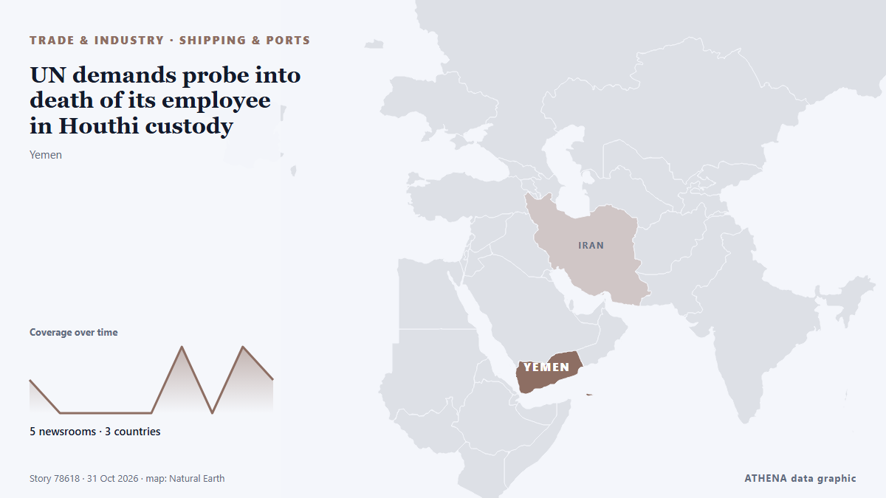

Handel, Industrie und Infrastruktur
Schlagzeilen werden auf Englisch angezeigt, wie veröffentlicht.

Schifffahrt und HäfenUN demands probe into death of its employee in Houthi custody
Over 70 UN personnel are being held by the Houthis. von The Straits Times
| 18. Okt. | 14 |
|---|---|
| 19. Okt. | 58 |
| 20. Okt. | 28 |
| 21. Okt. | 40 |
| 22. Okt. | 96 |
| 23. Okt. | 73 |
| 24. Okt. | 41 |
| 25. Okt. | 57 |
| 26. Okt. | 116 |
| 27. Okt. | 102 |
| 28. Okt. | 90 |
| 29. Okt. | 89 |
| 30. Okt. | 86 |
| 31. Okt. | 12 |
Greek PM: Turkey-Libya Maritime Agreement Illegal and Invalid
Kyriakos Mitsotakis calls the Turkey-Libya maritime agreement illegal, urges respect for international law and stronger European engagement in the Gulf. von Greek City Times
Panama Canal expands shipping capacity
The Panama Canal recorded increased shipping traffic, cargo volumes and revenue in 2026, despite concerns over water shortages linked to El Niño. von The Portugal News
Russia extends ban on diesel fuel exports
According to the official, specific exceptions will be made for supplies to global markets. von TASS (English)
Iran Says Four Tankers Hit Mines in Hormuz as US Insists Shipping Lanes Are Clear
Iran says four oil tankers caught fire after striking mines in the Strait of Hormuz, a claim that directly challenges US assurances that the main shipping lanes through the waterway have been cleared. von Greek City Times
Trump declares robot imports a national security threat
President orders trade talks on foreign-made factory robots, threatens tariffs. von Ars Technica
Call of Duty publisher apologizes for using real footage of Itaewon crowd crush
SEOUL, Oct. 30 (Yonhap) -- The makers behind the Call of Duty video game apologi... von Yonhap (English)
Oman rescues 25 from burning ship, Iran halts tankers
Oman’s navy evacuated the crew members from the Panamanian-flagged merchant ship RITI after it was attacked and caught fire. von Free Malaysia Today
Ryanair responds to Kumar Sangakkara’s allegation
Ryanair has responded to Sri Lankan cricket legend Kumar Sangakkara, who accused the airline, following an incident involving the airline’s gate staff at Dublin Airport. von Daily Mirror
Pres. Pezeshkian condoles Spain over deadly train collision
Emergency services combed through the wreckage at night to find further victims. von The Straits Times
More on tanker set ablaze in Hormuz Strait
KUWAIT CITY, Oct 23: A tanker reported being struck by an unknown projectile while sailing outbound through the Strait of Hormuz, about seven nautical miles northeast of Limah, Oma... von Arab Times
Explosion hits munitions factory in southern Spain: reports
Three employees were injured in an explosion at a factory in the Meepe area of Padukka today (30), police said. von Daily Mirror
FedEx Freight sees volumes stabilize, eyes Q4 margin improvement
FedEx Freight reported Thursday that volumes continue to stabilize, and it anticipates stronger operating leverage next year, bolstered by business wins and an improved freight mix from its dedicated… von FreightWaves
US orders non-emergency staff to leave Saudi Arabia over security risks
Oct 30 (Reuters) - The United States ordered non-emergency government employees and their family members to leave Saudi Arabia effective October 23 due to safety risks, the US embassy in Riyadh said… von Al-Monitor
Uzbekistan–Türkiye Trade Agreement to Cover More Products
Uzbekistan and Türkiye have agreed to expand the list of goods eligible for preferential trade treatment and signed agreements on. von The Times of Central Asia
22 African Heads of State Join AU Chairperson at Russia-Africa Summit in Moscow
By Yankuba Jallow Twenty-two African countries are represented by their heads of state at the third Russia-Africa Summit in Moscow, where Russian President Vladimir Putin and African leaders are… von Foroyaa
Russian attacks leave over 350,000 without power in Dnipro and surrounding area
More than 350,000 consumers in Dnipro and surrounding settlements have been left without electricity following Russian attacks. von Ukrinform (English)
Russian citizen faces spying charges in Poland after photographing railways
The suspect was arrested while taking pictures at an unguarded railway crossing. von Politico Europe
New levy on non-EU parcels kicks in Nov 1
The handling fee comes on top of the €3 duty imposed in July on small packages worth less than €150. von Free Malaysia Today
Greece and Turkey Clash at UN Over Libya Maritime Agreement
Greece and Turkey engaged in a sharp diplomatic confrontation at the United Nations Security Council on Thursday, over the controversial 2019 Turkey-Libya maritime agreement, exchanging accusations… von Greek Reporter
Turkey-Libya maritime delimitation MoU ‘null and void’ says Cyprus
The Republic of Cyprus has reiterated its position that the 2019 Turkey-Libya MoU on maritime delimitation is “null and void”. von Cyprus Mail
Afghanistan opium poppy cultivation surges despite Taliban govt ban: UN
Opium poppy cultivation in Afghanistan more than quadrupled in 2026 despite a Taliban government ban, the United Nations said on Thursday, urging that impoverished farmers needed alternatives to the… von Dawn
Dodging fuel price hikes, Damascus drivers turn to electric cars
Taxi driver Mohammed Kanaan drives his shiny new electric car around Damascus's rundown streets, hoping for higher profits as spiking petrol prices made his old car too expensive to run. von Al-Monitor
US Centcom rejects Iranian reports of vessels hitting Hormuz sea mines
The US Central Command (CentCom) has rejected Iranian media claims that commercial ships are striking sea mines in the Strait of Hormuz, saying American forces have cleared the waterway’s… von Gulf News
PM Mitsotakis at UN: Turkish-Libyan memorandum illegal and arbitrary, geography cannot be rewritten
International law could not be applied selectively and rules governing the seas could not be rewritten to serve the ambitions of individual states, Prime Minister Kyriakos Mitsotakis stressed… von Keep Talking Greece
DUP ‘can do no other than remove Michelle O’Neill’ – Lockhart
The Upper Bann DUP MP indicated she would ‘not stand for a halfway house’. von Evening Standard (London)
Wheat Fund Edges Up 0.23% as Bunge Falls 4.74% | Grains, Oct 29
The WEAT wheat fund rose 0.23% and the SOYB soybean fund 0.15% on Thursday, while grain traders Bunge and ADM fell 4.74% and 1.33%; corn edged up 0.11%. von The Rio Times
Japan a real threat to regional security: Chinese spokesperson
Closing his remarks, Koizumi reaffirmed Japan's support for ASEAN-led decision-making. von Daily Tribune
Vessel reported on fire in Strait of Hormuz: UK maritime agency
Fire on vessel reported 25 nautical miles northeast of Khasab, Oman. von Anadolu Agency (English)
“CHOGM 2026 is our moment to shape what comes next” – Commonwealth Secretary-General
World leaders will gather in St John’s, Antigua and Barbuda next week for the 28th Commonwealth Heads of Government Meeting (CHOGM) with a call to accelerate partnerships and investment in the… von Post-Courier (PNG)
Bolsonaro's escape to the US: How it happened
FLAVIO Bolsonaro’s clandestine escape to the United States bewildered Brazil and triggered a frantic search for his whereabouts. von New Straits Times
Smart, green and service-oriented: Canton Fair mirrors new momentum in China's foreign trade
GUANGZHOU, China, Oct. 18, 2026 /PRNewswire/ — Phase 1 of the 140th Canton Fair, themed “Advanced Manufacturing,” opened on October 15 and will run through October 19. von Laotian Times
Kenya: President Ruto to Make Major Announcement From Russia in Recorded Address
[Capital FM] Nairobi -- President William Ruto will deliver a recorded address to Kenyans at 6pm on Wednesday from Russia, where he is attending the Third Russia-Africa Economic and Humanitarian… von AllAfrica
US-EU trade truce at risk over $3.4 billion Airbus loan, Trump official warns
US Trade Representative Jamieson Greer warned on Monday that a $3.4 billion European Investment Bank loan to Airbus could jeopardise a tariff truce between Washington and Brussels. von France 24 English
Ferry Strike Ties Up Ships at Greece’s Biggest Ports
A 24-hour ferry strike keeps ships tied up at Piraeus, Rafina, Lavrio, Patras and three more ports on Friday 30 October as seafarers demand war zone safety. von Greek City Times